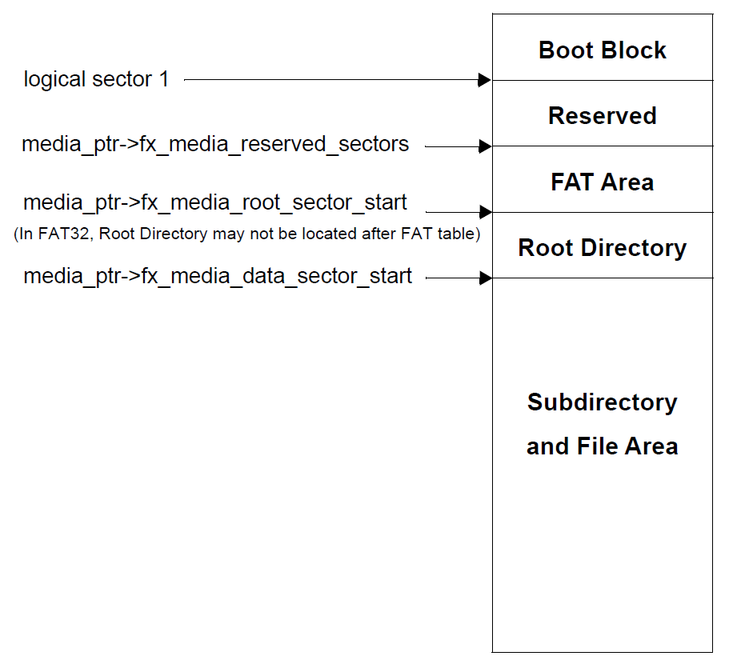
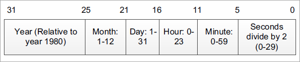
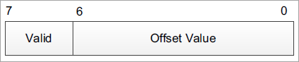
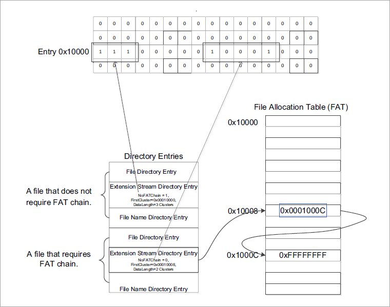
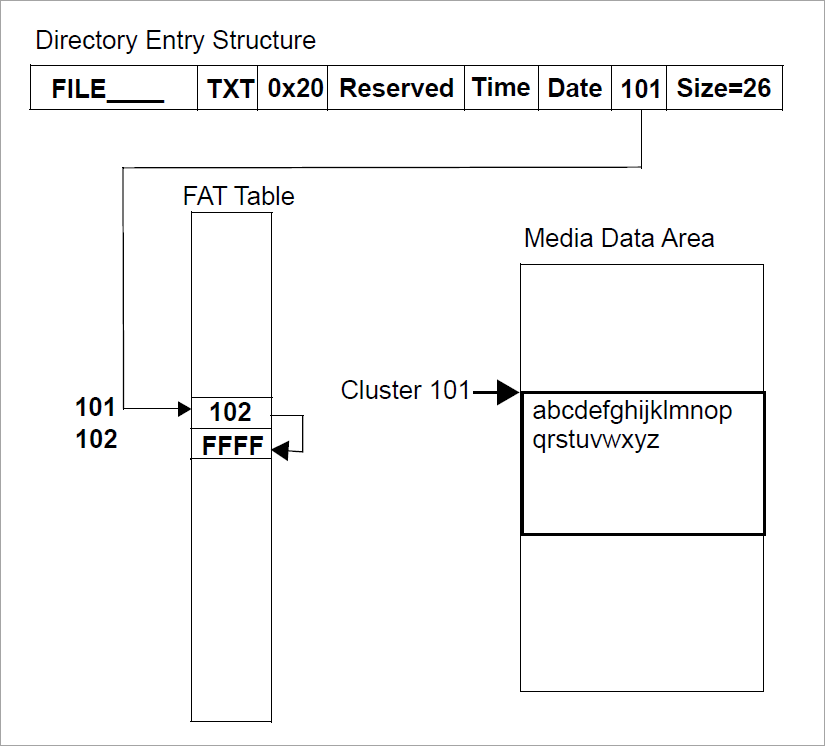

Chapter 3 - Functional components of FileX
This chapter contains a description of the high-performance FileX embedded file system from a functional perspective.
Media Description
FileX is a high-performance embedded file system that conforms to the FAT file system format. FileX views the physical media as an array of logical sectors. How these sectors are mapped to the underlying physical media is determined by the I/O driver connected to the FileX media during the fx_media_open call.
FAT12/16/32 Logical Sectors
The exact organization of the media’s logical sectors is determined by the contents of the physical media’s boot record. The general layout of the media’s logical sectors is shown in Figure 1.
FileX logical sectors start at logical sector 1, which points to the first reserved sector of the media. Reserved sectors are optional, but when in use they typically contain system information such as boot code.
FAT12/16/32 Media Boot Record
The exact sector offset of the other areas in the logical sector view of the media is derived from the contents of the media boot record. The location of the boot record is typically at sector 0. However, if the media has hidden sectors, the offset to the boot sector must account for them (they are located immediately BEFORE the boot sector). Table 1 lists the media’s boot record components, and the components are described in the paragraphs.
-
Jump Instruction The jump instruction field is a three-byte field that represents an Intel x86 machine instruction for a processor jump. This is a legacy field in most situations.

FIGURE 1. FileX Media Logical Sector View
-
OEM Name The OEM name field is reserved for manufacturers to place their name or a name for the device.
-
Bytes Per Sector The bytes per sector field in the media boot record defines how many bytes are in each sector—the fundamental element of the media.
-
Sectors Per Cluster The sectors per cluster field in the media boot record defines the number of sectors assigned to a cluster. The cluster is the fundamental allocation element in an FAT compatible file system. All file information and subdirectories are allocated from the media’s available clusters as determined by the File Allocation Table (FAT).
TABLE 1. FileX Media Boot Record
Offset Field Number of Bytes 0x00
Jump Instruction (e9,xx,xx or eb,xx,90)
3
0x03
OEM Name
8
0x0B
Bytes Per Sector
2
0x0D
Sectors Per Cluster
1
0x0E
Number of Reserved Sectors
2
0x10
Number of FATs
1
0x11
Size of Root Directory
2
0x13
Number of Sectors FAT-12 & FAT-16
2
0x15
Media Type
1
0x16
Number of Sectors Per FAT
2
0x18
Sectors Per Track
2
0x1A
Number of Heads
2
0x1C
Number of Hidden Sectors
4
0x20
Number of Sectors - FAT-32
4
0x24
Sectors per FAT (FAT-32)
4
0x2C
Root Directory Cluster
4
0x3E
System Boot code
448
0x1FE
0x55AA
2
-
Reserved Sectors The reserved sectors field in the media boot record defines the number of sectors reserved between the boot record and the first sector of the FAT area. This entry is zero in most cases.
-
Number of FATs The number of FATs entry in the media boot record defines the number of FATs in the media. There must always be at least one FAT in a media. Additional FATs are merely duplicate copies of the primary (first) FAT and are typically used by diagnostic or recovery software.
-
Root Directory Size The root directory size entry in the media boot record defines the fixed number of entries in the root directory of the media. This field is not applicable to subdirectories and the FAT-32 root directory because they are both allocated from the media’s clusters.
-
Number of Sectors FAT-12 & FAT-16 The number of sectors field in the media boot record contains the total number of sectors in the media. If this field is zero, then the total number of sectors is contained in the number of sectors FAT-32 field located later in the boot record.
-
Media Type The media type field is used to identify the type of media present to the device driver. This is a legacy field.
-
Sectors Per FAT The sectors per FAT filed in the media boot record contains the number of sectors associated with each FAT in the FAT area. The number of FAT sectors must be large enough to account for the maximum possible number of clusters that can be allocated in the media.
-
Sectors Per Track The sectors per track field in the media boot record defines the number of sectors per track. This is typically only pertinent to actual disk-type media. FLASH devices don’t use this mapping.
-
Number of Heads The number of heads field in the media boot record defines the number of heads in the media. This is typically only pertinent to actual disk-type media. FLASH devices don’t use this mapping.
-
Hidden Sectors The hidden sectors field in the media boot record defines the number of sectors before the boot record. This field is maintained in the FX_MEDIA control block and must be accounted for in FileX I/O drivers in all read and write requests made by FileX.
-
Number of Sectors FAT-32 The number of sectors field in the media boot record is valid only if the two-byte number of sectors field is zero. In such a case, this four-byte field contains the number of sectors in the media.
-
Sectors per FAT (FAT-32) The sectors per FAT (FAT-32) field is valid only in FAT-32 format and contains the number of sectors allocated for each FAT of the media.
-
Root Directory Cluster The root directory cluster field is valid only in FAT-32 format and contains the starting cluster number of the root directory.
-
System Boot Code The system boot code field is an area to store a small portion of boot code. In most devices today, this is a legacy field.
-
Signature 0x55AA The signature field is a data pattern used to identify the boot record. If this field is not present, the boot record is not valid.
File Allocation Table (FAT)
The File Allocation Table (FAT) starts after the reserved sectors in the media. The FAT area is basically an array of 12-bit, 16-bit, or 32-bit entries that determine if that cluster is allocated or part of a chain of clusters comprising a subdirectory or a file. The size of each FAT entry is determined by the number of clusters that need to be represented. If the number of clusters (derived from the total sectors divided by the sectors per cluster) is less than or equal to 4,086, 12-bit FAT entries are used. If the total number of clusters is greater than 4,086 and less than 65,525, 16-bit FAT entries are used. Otherwise, if the total number of clusters is greater than or equal to 65,525, 32-bit FAT is used.
For FAT12/16/32, the FAT table not only maintains the cluster chain, it also provides information on cluster allocation: whether or not a cluster is available.
FAT Entry Contents
The first two entries in the FAT table are not used and typically have the following contents.
| FAT Entry | 12-bit FAT | 16-bit FAT | 32-bit FAT |
|---|---|---|---|
Entry 0 |
0x0F0 |
0x00F0 |
0x000000F0 |
Entry 1 |
0xFFF |
0xFFFF |
0x0FFFFFFF |
FAT entry number 2 represents the first cluster in the media’s data area. The contents of each cluster entry determines whether or not it is free or part of a linked list of clusters allocated for a file or a subdirectory. If the cluster entry contains another valid cluster entry, then the cluster is allocated and its value points to the next cluster allocated in the cluster chain.
Possible cluster entries are defined as follows.
| Meaning | 12-bit FAT | 16-bit FAT | 32-bit FAT |
|---|---|---|---|
Free Cluster |
0x000 |
0x0000 |
0x00000000 |
Not Used |
0x001 |
0x0001 |
0x00000001 |
Reserved |
0xFF0-FF6 |
0xFFF0-FFF6 |
0x0FFFFFF0-6 |
Bad Cluster |
0xFF7 |
0xFFF7 |
0x0FFFFFF7 |
Reserved |
- |
- |
- |
Last Cluster |
0xFF8-FFF |
0xFFF8-FFFF |
0x0FFFFFF8-F |
Cluster Link |
0x002-0xFEF |
0x0002-FFEF |
0x2-0x0FFFFFEF |
The last cluster in an allocated chain of clusters contains the Last Cluster value (defined above). The first cluster number is found in the file or subdirectory’s directory entry.
Internal Logical Cache
FileX maintains a most-recently-used logical sector cache for each opened media. The maximum size of the logical sector cache is defined by the constant FX_MAX_SECTOR_CACHE and is located in fx_api.h. This is the first factor determining the size of the internal logical sector cache.
The other factor that determines the size of the logical sector cache is the amount of memory supplied to the fx_media_open call by the application. There must be enough memory for at least one logical sector. If more than FX_MAX_SECTOR_CACHE logical sectors are required, the constant must be changed in fx_api.h and the entire FileX library must be rebuilt.
| Each opened media in FileX may have a different cache size depending on the memory supplied during the open call. |
Write Protect
FileX provides the application driver the ability to dynamically set write protection on the media. If write protection is required, the driver sets to FX_TRUE the fx_media_driver_write_protect field in the associated FX_MEDIA structure. When set, all attempts by the application to modify the media are rejected as well as attempts to open files for writing. The driver may also disable write protection by clearing this field.
Free Sector Update
FileX provides a mechanism to inform the application driver when sectors are no longer in use. This is especially useful for FLASH memory managers that manage all logical sectors being used by FileX.
If notification of free sectors is required, the application driver sets to FX_TRUE the fx_media_driver_free_sector_update field in the associated FX_MEDIA structure. This assignment is typically done during driver initialization.
Setting this field, FileX makes a FX_DRIVER_RELEASE_SECTORS driver call indicating when one or more consecutive sectors become free.
Media Control Block FX_MEDIA
The characteristics of each open media in FileX are contained in the media control block. This structure is defined in the file fx_api.h.
The media control block can be located anywhere in memory, but it is most common to make the control block a global structure by defining it outside the scope of any function.
Locating the control block in other areas requires a bit more care, just like all dynamically allocated memory. If a control block is allocated within a C function, the memory associated with it is part of the calling thread’s stack.
[!WARNING] In general, avoid using local storage for control blocks because after the function returns, all of its local variable stack space is released—regardless of whether it is still in use!
FAT12/16/32 Directory Description
FileX supports both 8.3 and Windows Long File Name (LFN) name formats. In addition to the name, each directory entry contains the entry’s attributes, the last modified time and date, the starting cluster index, and the size in bytes of the entry. Table 3 shows the contents and size of a FileX 8.3 directory entry.
-
Directory Name
FileX supports file names ranging in size from 1 to 255 characters. Standard eight-character file names are represented in a single directory entry on the media. They are left justified in the directory name field and are blank padded. In addition, the ASCII characters that comprise the name are always capitalized.
Long File Names (LFNs) are represented by consecutive directory entries, in reverse order, followed immediately by an 8.3 standard file name. The created 8.3 name contains all the meaningful directory information associated with the name. Table 4 shows the contents of the directory entries used to hold the Long File Name information, and Table 5 shows an example of a 39-character LFN that requires a total of four directory entries.
The constant FX_MAX_LONG_NAME_LEN, defined in fx_api.h, contains the maximum length supported by FileX. -
Directory Filename Extension
For standard 8.3 file names, FileX also supports the optional three-character directory filename extension. Just like the eight-character file name, filename extensions are left justified in the directory filename extension field, blank padded, and always capitalized.
TABLE 3. FileX 8.3 Directory Entry
Offset Field Number of Bytes 0x00
Directory Entry Name
8
0x08
Directory Extension
3
0x0B
Attributes
1
0x0C
NT (introduced by the long file name format and is reserved for NT [always 0])
1
0x0D
Created Time in milliseconds ( introduced by the long file name format and represents the number of milliseconds when the file was created.)
1
0x0E
Created Time in hours & minutes (introduced by the long file name format and represents the hour and minute the file was created )
2
0x10
Created Date (introduced by the long file name format and represents the date the file was created.)
2
0x12
Last Accessed Date ( introduced by the long file name format and represents the date the file was last accessed.)
2
0x14
Starting Cluster (Upper 16 bits FAT-32 only)
2
0x16
Modified Time
2
0x18
Modified Date
2
0x1A
Starting Cluster (Lower 16 bits FAT-32 or FAT-12 or FAT-16)
2
0x1C
File Size
4
-
Directory Attributes
The one-byte directory attribute field entry contains a series of bits that specify various properties of the directory entry. Directory attribute definitions are as follow:
Attribute Bit Meaning 0x01
Entry is read-only.
0x02
Entry is hidden.
0x04
Entry is a system entry.
0x08
Entry is a volume label
0x10
Entry is a directory.
0x20
Entry has been modified.
Because all the attribute bits are mutually exclusive, there may be more than one attribute bit set at a time.
-
Directory Time
The two-byte directory time field contains the hours, minutes, and seconds of the last change to the specified directory entry. Bits 15 through 11 contain the hours, bits 10 through 5 contain the minutes, and bits 4 through 0 contain the half seconds. Actual seconds are divided by two before being written into this field.
-
Directory Date
The two-byte directory date field contains the year (offset from 1980), month, and day of the last change to the specified directory entry. Bits 15 through 9 contain the year offset, bits 8 through 5 contain the month offset, and bits 4 through 0 contain the day.
-
Directory Starting Cluster
This field occupies 2 bytes for FAT-12 and FAT-16. For FAT-32 this field occupies 4 bytes. This field contains the first cluster number allocated to the entry (subdirectory or file).
*Note that FileX creates new files without an initial cluster (starting cluster field equal to zero) to allow users to optionally allocate a contiguous number of clusters for a newly created file. * -
Directory File Size
The four-byte directory file size field contains the number of bytes in the file. If the entry is really a subdirectory, the size field is zero.
Long File Name Directory
-
Ordinal
The one-byte ordinal field that specifies the number of the LFN entry. Because LFN entries are positioned in reverse order, the ordinal values of the LFN directory entries comprising a single LFN decrease by one. In addition, the ordinal value of the LFN directly before the 8.3 file name must be one.
TABLE 4. Long File Name Directory Entry
Offset Field Number of Bytes 0x00
Ordinal Field
1
0x01
Unicode Character 1
2
0x03
Unicode Character 2
2
0x05
Unicode Character 3
2
0x07
Unicode Character 4
2
0x09
Unicode Character 5
2
0x0B
LFN Attributes
1
0x0C
LFN Type (Reserved always 0)
1
0x0D
LFN Checksum
1
0x0E
Unicode Character 6
2
0x10
Unicode Character 7
2
0x12
Unicode Character 8
2
0x14
Unicode Character 9
2
0x16
Unicode Character 10
2
0x18
Unicode Character 11
2
0x1A
LFN Cluster (unused always 0)
2
0x1C
Unicode Character 12
2
0x1E
Unicode Character 13
2
-
Unicode Character
The two-byte Unicode Character fields are designed to support characters from many different languages. Standard ASCII characters are represented with the ASCII character stored in the first byte of the Unicode character followed by a space character.
-
LFN Attributes
The one-byte LFN Attributes field contains attributes that identify the directory entry as an LFN directory entry. This is accomplished by having the read-only, system, hidden, and volume attributes all set.
-
LFN Type
The one-byte LFN Type field is reserved and is always 0.
-
LFN Checksum
The one-byte LFN Checksum field represents a checksum of the 11 characters of the associated MSDOS 8.3 file name. This checksum is stored in each LFN entry to help ensure the LFN entry corresponds to the appropriate 8.3 file name.
-
LFN Cluster
The two-byte LFN Cluster field is unused and is always 0.
TABLE 5. Directory Entries Comprising a 39-Character LFN
Entry Meaning 1
LFN Directory Entry 3
2
LFN Directory Entry 2
3
LFN Directory Entry 1
4
8.3 Directory Entry (ttttt~n.xx)
Notes on Timestamps
-
Timestamp Entry The timestamp fields are interpreted as follows:
-
10ms Increment Fields The value in the 10ms increment field provides finer granularity to the timestamp value. The valid values are between 0 (0ms) and 199 (1990ms).

-
UTC Offset Field

-
Offset Value
7-bit signed integer represents offset from UTC time, in 15 minutes increments.
-
Valid
Whether or not the value in the offset field is valid. 0 indicates the value in the offset value field is invalid. 1 indicates the value is valid.
Stream Extension Directory Entry
A description of Stream Extension Directory Entry and its contents is included in the following table.
TABLE 7. Stream Extension Directory Entry
| Offset | Field | Number of Bytes |
|---|---|---|
0x00 |
Entry Type |
1 |
0x01 |
Flags |
1 |
0x02 |
Reserved 1 |
1 |
0x03 |
Name Length |
1 |
0x04 |
Name Hash |
2 |
0x06 |
Reserved 2 |
2 |
0x08 |
Valid Data Length |
8 |
0x10 |
Reserved 3 |
4 |
0x14 |
First Cluster |
4 |
0x18 |
Data Length |
8 |
-
Entry Type
The entry type field indicates the type of this entry. For streaming extension Directory Entry, this field must be 0xC0.
-
Flags
This field contains a series of bits that specify various properties:
Flag Bit Meaning 0x01
This field indicates whether or not allocation of clusters is possible. This field should be 1.
0x02
This field indicates whether or not the associated clusters are contiguous. A value 0 means the FAT entry is valid and FileX shall follow the FAT chain. A value 1 means the FAT entry is invalid and the clusters are contiguous.
All other bits
Reserved.
-
Reserved 1
This field should be 0.
-
Name Length
The name length field contains the length of the unicode string in the file name directory entries collectively contain. The file name directory entries shall immediately follow this stream extension directory entry.
-
Name Hash
The name hash field is a 2-byte entry, containing the hash value of the up-cased file name. The hash value allows faster file/directory name lookup: if the hash values don’t match, the file name associated with this entry is not a match.
-
Reserved 2
This field should be 0.
-
Valid Data Length
The valid data length field indicates the amount of valid data in the file.
-
Reserved 3
This filed should be 0.
-
First Cluster
The first cluster field contains index of the first cluster of the data stream.
-
Data Length
The data length field contains the total number of bytes in the allocated clusters.
Root Directory
In FAT 12- and 16-bit formats, the root directory is located immediately after all the FAT sectors in the media and can be located by examining the fx_media_root_sector_start in an opened FX_MEDIA control block. The size of the root directory, in terms of number of directory entries (each 32 bytes in size), is determined by the corresponding entry in the media’s boot record.
The root directory in FAT-32 can be located anywhere in the available clusters. Its location and size are determined from the boot record when the media is opened. After the media is opened, the fx_media_root_sector_start field can be used to find the starting cluster of the FAT-32 root directory.
Subdirectories
There is any number of subdirectories in an FAT system. The name of the subdirectory resides in a directory entry just like a file name. However, the directory attribute specification (0x10) is set to indicate the entry is a subdirectory and the file size is always zero. Figure 3 shows what a typical subdirectory structure looks like for a new singlecluster subdirectory named SAMPLE.DIR with one file called FILE.TXT. In most ways, subdirectories are very similar to file entries. The first cluster field points to the first cluster of a linked list of clusters. When a subdirectory is created, the first two directory entries contain default directories, namely the "." directory and the ".." directory. The "." directory points to the subdirectory itself, while the ".." directory points to the previous or parent directory.
Global Default Path
FileX provides a global default path for the media. The default path is used in any file or directory service that does not explicitly specify a full path.
Initially, the global default directory is set to the media’s root directory. This may be changed by the application by calling fx_directory_default_set.
The current default path for the media may be examined by calling fx_directory_default_get. This routine provides a string pointer to the default path string maintained inside of the FX_MEDIA control block.
Local Default Path
FileX also provides a thread-specific default path that allows different threads to have unique paths without conflict. The FX_LOCAL_PATH structure is supplied by the application during calls to fx_directory_local_path_set and fx_directory_local_path_restore to modify the local path for the calling thread.
If a local path is present, the local path takes precedence over the global default media path. If the local path is not setup or if it is cleared with the fx_directory_local_path_clear service, the media’s global default path is used once again.
File Description
FileX supports standard 8.3 character and long file names with three-character extensions. In addition to the ASCII name, each file entry contains the entry’s attributes, the last modified time and date, the starting cluster index, and the size in bytes of the entry.
File Allocation
FileX supports the standard cluster allocation scheme of the FAT format. In addition, FileX supports pre-cluster allocation of contiguous clusters. To accommodate this, each FileX file is created with no allocated clusters. Clusters are allocated on subsequent write requests or on fx_file_allocate requests to pre-allocate contiguous clusters.
Figure 4, "FileX FAT-16 File Example," shows a file named FILE.TXT with two sequential clusters allocated starting at cluster 101, a size of 26, and the alphabet as the data in the file’s first data cluster number 101.
File Access
A FileX file may be opened multiple times simultaneously for read access. However, a file can only be opened once for writing. The information used to support the file access is contained in the FX_FILE file control block.
| Note that the media driver can dynamically set write protection. If this happens all write requests are rejected as well as attempts to open a file for writing. |
System Information
FileX system information consists of keeping track of the open media instances and maintaining the global system time and date.

FIGURE 3. File with Contiguous Clusters vs. File Requiring FAT Link
By default, the system date and time are set to the last release date of FileX. To have accurate system date and time, the application must call fx_system_time_set and fx_system_date_set during initialization.
System Date
The FileX system date is maintained in the global _fx_system_date variable. Bits 15 through 9 contain the year offset from 1980, bits 8 through 5 contain the month offset, and bits 4 through 0 contain the day.
System Time
The FileX system time is maintained in the global _fx_system_time variable. Bits 15 through 11 contain the hours, bits 10 through 5 contain the minutes, and bits 4 through 0 contain the half seconds.
Periodic Time Update
During system initialization, FileX creates a ThreadX application timer to periodically update the system date and time. The rate at which the system date and time update is determined by two constants used by the _fx_system_initialize function.
The constants FX_UPDATE_RATE_IN_SECONDS and FX_UPDATE_RATE_IN_TICKS represent the same period of time. The constant FX_UPDATE_RATE_IN_TICKS is the number of ThreadX timer ticks that represents the number of seconds specified by the constant FX_UPDATE_RATE_IN_SECONDS. The FX_UPDATE_RATE_IN_SECONDS constant specifies how many seconds between each FileX time update. Therefore, the internal FileX time increments in intervals of FX_UPDATE_RATE_IN_SECONDS. These constants may be supplied during compilation of fx_system_initialize, or the developer may modify the defaults found in the fx_port.h file of the FileX release.
The periodic FileX timer is used only for updating the global system date and time, which is used solely for file time-stamping. If time-stamping is not necessary, simply define FX_NO_TIMER when compiling fx_system_initialize.c to eliminate the creation of the FileX periodic timer.

FIGURE 4. FileX FAT-16 File Example